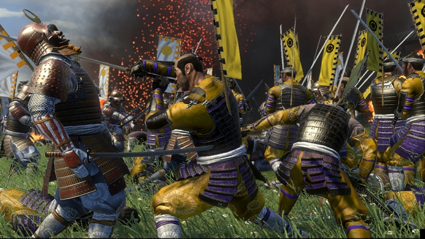
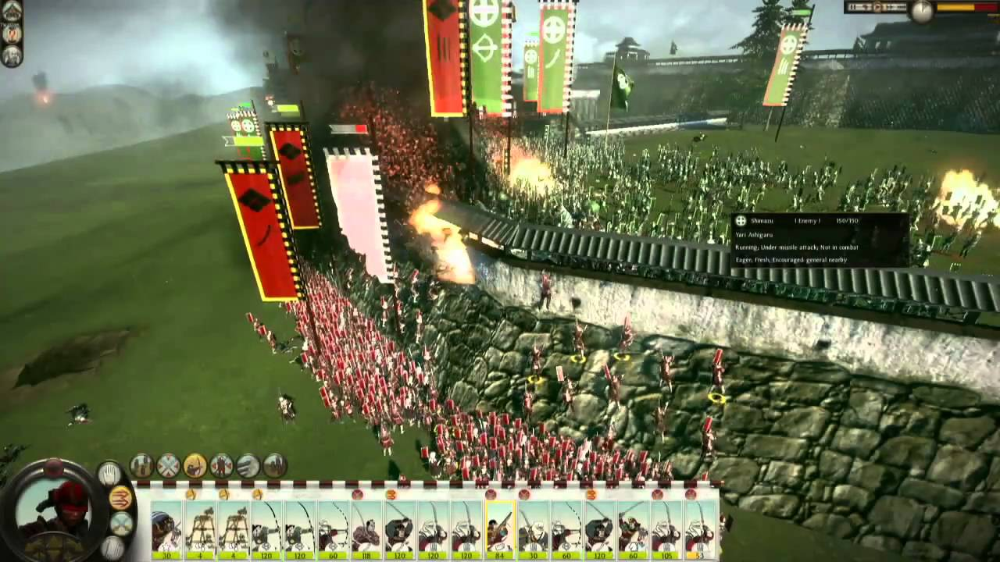

Bem o que é Total War? Total War é uma série de jogos que mistura elementos de RTS (Real-Time-Stratey ou Estratégia em Tempo Real) e de games de turnos, sendo o seu diferencial o tamanho das batalhas, dependendo do titulo de sua escolha você pode se encontrar administrando grandes imperios ou reinos ermegentes da era classica, feudal, da navegação, da Sengoku, etc.
Por exemplo o game Shogun Total War 2 você pode escolher um dos principais clans da guerra civil japones sendo que cada um possui localizações diferentes, unidades exclusivas e bonus respequitivos com a cultura daquela época, isso acaba por criar um jogo aonde cada campanha é diferente da outro, com isso garantindo uma experiência única para o jogador.
 